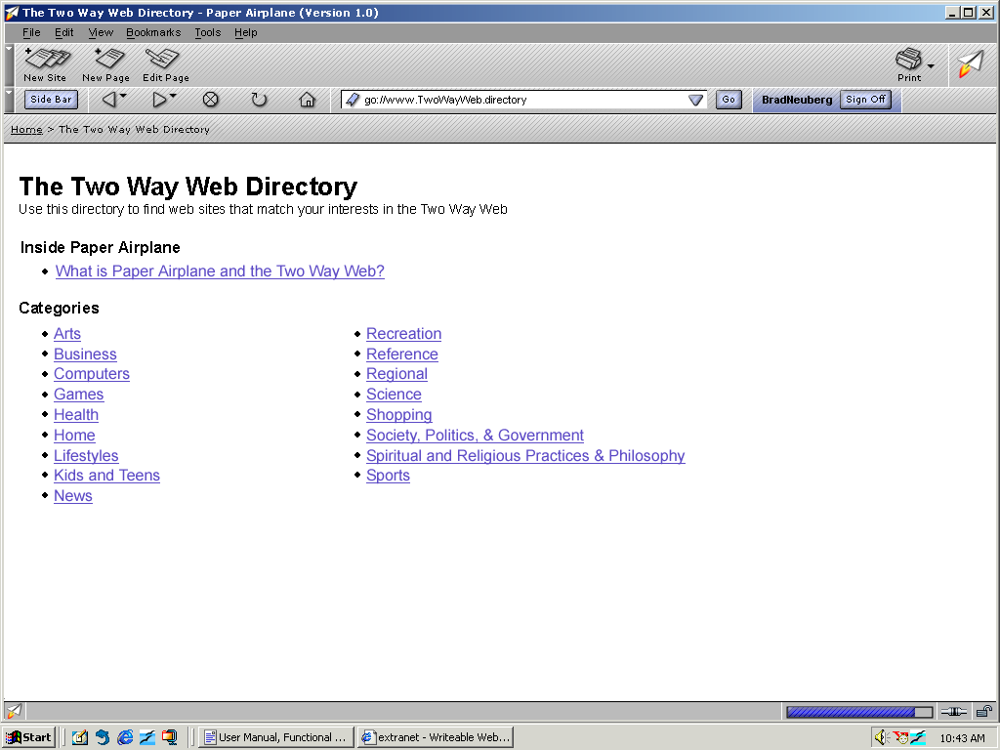
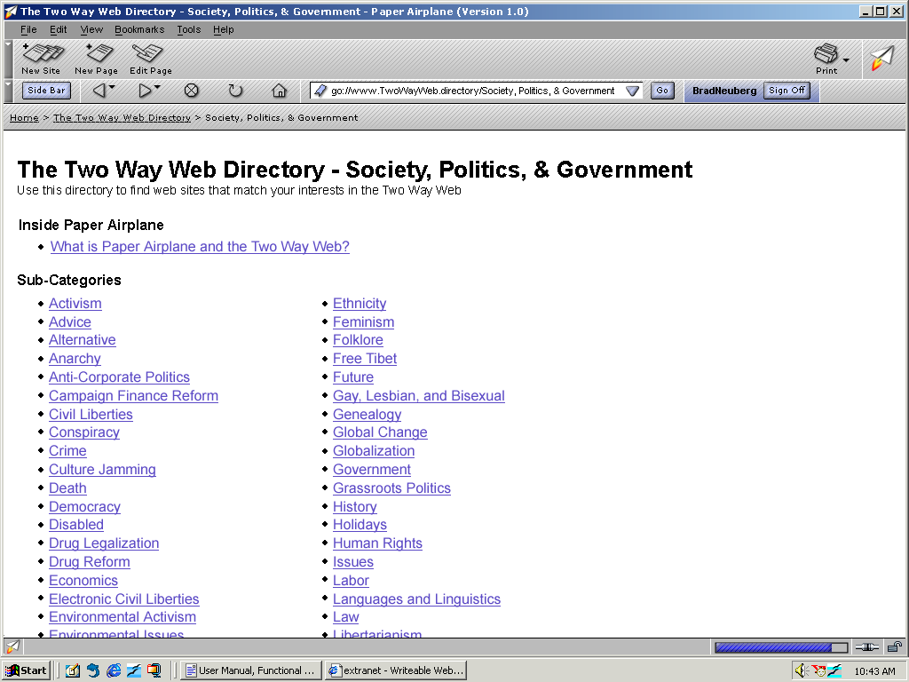
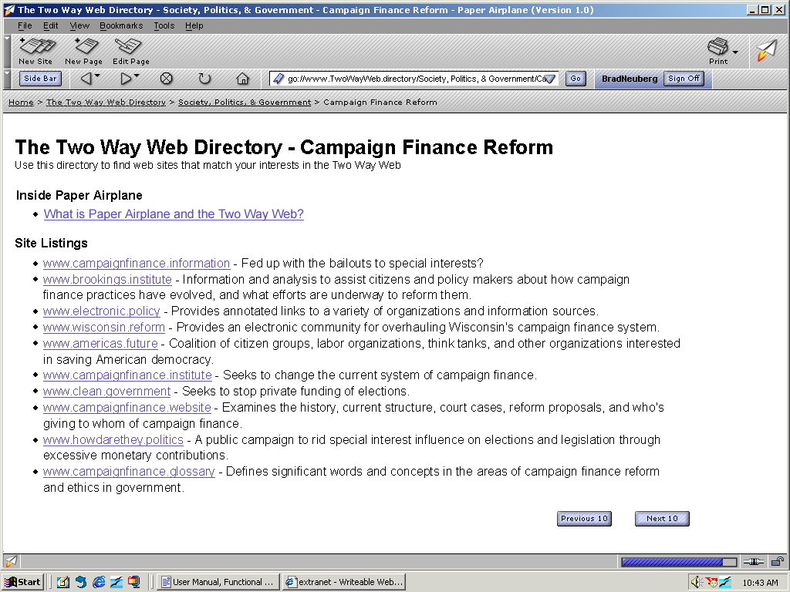

| | |
Table of Contents | Last | Next
Main Portions of Paper Airplane
The Two Way Web Directory
The Two Way Web Directory is the default home page that users see when they first sign-on and see the browser screen. Every Two Way Web Site can optionally self-categorize themselves into up to three categories and sub-categories, such as the Society, Politics, & Government category and the Feminism sub-category. The categories and sub-categories given by web-site creators is used to dynamically create a distributed, Yahoo-style, hierarchical listing of Two Way Web Sites.
The Two Way Web Directory has three levels: the top-level category listing, the second-tier sub-category listing per category, and the final set of sites in that sub-category. The top-level category listing looks as follows:

The Two Way Web Directory
The list of sub-categories differs based on the main category. Here is an example list of sub-categories:

Sub-Categories in Society, Politics, & Government
The final level is the list of Two Way Web Sites within a particular sub-category. These are presented in sets of ten, and are randomly ordered (i.e. they aren't alphabetized):

Campaign Finance Reform Sub-Category
For a full list of the categories and sub-categories see Appendix D - List of Categories and Sub-Categories in The Two Way Web Directory.